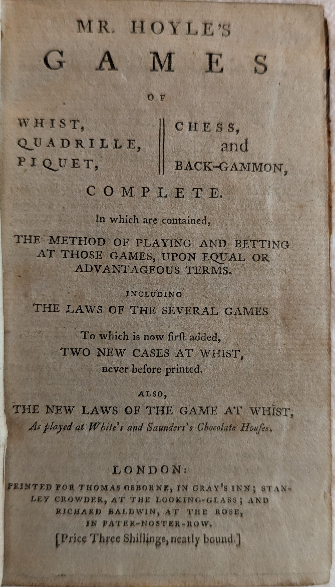

 |
Title: |
MR. HOYLE'S | GAMES | OF | [3 lines to left of double rule] WHIST, |
QUADRILLE, | PIQUET, | [3 lines to right of double rule] CHESS, | and |
BACK-GAMMON, | COMPLETE. | In which are contained, | THE METHOD OF PLAYING
AND BETTING | AT THOSE GAMES, UPON EQUAL OR | ADVANTAGEOUS TERMS. |
INCLUDING | THE LAWS OF THE SEVERAL GAMES | To which is now firſt added, |
TWO NEW CASES AT WHIST, | never before printed. | ALSO, | THE NEW LAWS OF
THE GAME AT WHIST, | as played at White's and Saunder's Chocolate Houſes. | LONDON: | PRINTED FOR THOMAS OSBORNE, IN GRAY'S INN; STAN-|LEY
CROWDER, AT THE LOOKING-GLASS; AND | RICHARD BALDWIN, AT THE ROSE, | IN
PATER-NOSTER-ROW. | {Price Three Shillings, neatly
bound.} |
| Collation: |
18o: A–S6 [$½ signed]; 108 leaves, pp. [i–iii] iv–x [xi–xii], [1] 2–4 [5] 6–84 [85–87] 88–111 [112–115] 116–146 [147] 148–161 [162–165] 166–204 |
| Section Title Whist |
[double rule] | A | SHORT TREATISE | ON THE | GAME OF WHIST; |
CONTAINING, | THE NEW LAWS OF THE GAME | OF WHIST, | As played at White's
and Saunders's Chocolate-|Houſes. | [reverse oxford rule] |
| Section Title Quadrille |
[oxford rule] | A | SHORT TREATISE | ON THE | GAME OF QUADRILLE; |
SHEWING | The Odds of Winning or Loſing moſt Games | that are commonly Played, either by Calling a | King, or by Playing Sans Prendre. | TO WHICH ARE ADDED, | THE LAWS OF THE GAME. | [reverse oxford rule] |
| Section Title Piquet and Chess |
[oxford rule] | A | SHORT TREATISE | ON THE | GAME OF PIQUET; |
DIRECTING, | With moral Certainty, how to diſcard any Hand | to Advantage,
by ſhowing the Chances of tak-|ing in any one, two, three, four, or five
certain | Cards. | Computations for thoſe who Bet their Money | at the Game. | ALSO, | THE LAWS OF THE GAME. | TO WHICH ARE ADDED, | SOME RULES AND
OBSERVATIONS FOR PLAY-|ING WELL AT CHESS. | [reverse oxford rule] |
| Section Title Backgammon |
[double rule] | A | SHORT TREATISE | ON THE GAME OF | BACK-GAMMON. |
CONTAINING, | [12 lines to left of double rule] A Table of the thirty-ſix | Chances, with directions | how to find out the
Odds | of being hit, upon ſingle, | or double Dice. | Rules whereby a
Beginner | may, with due attention | to them, attain playing | it well. |
The ſeveral Stages for car-|rying your Men home, | in order to loſe no
Point. | [12 lines to right of double rule] How to find out who is |
forwardeſt to win a Hit. | Caſes ſtated for Back-|Games, with directions |
how to play for one. | Caſes ſtated, how to know | when you may have the |
better of ſaving a Gam-|mon by running, | Variety of Caſes of Curio-|ſity
and Inſtruction. | The Laws of the Game. | [double rule] |
| Contents: |
Signature (Page) Reference |
Contents |
Signature (Page) Reference |
Running Titles |
| A1r (i) |
title |
|
|
| A1v (ii) |
‘ADVERTISEMENT. | [...]’ |
|
|
| A2r–A5v (iii–x) |
‘[oxford rule] | CONTENTS. | [...]’ |
A2v–A5v (iv–x) |
‘CONTENTS.’ |
| A6r (xi) |
section title whist |
|
|
| A6v (xii) |
blank |
|
|
| B1r–H6v (1–84) |
‘[double rule] | A SHORT TREATISE | ON THE GAME OF | WHIST. |
[...]’ |
B1v–H6v (2–84) |
‘WHIST.’ |
| I1r (85) |
section title Quadrille |
|
|
| I1v (86) |
blank |
|
|
| I2r–L2r (87–111) |
‘[double rule] | A SHORT TREATISE | ON THE GAME OF | QUADRILLE. |
[...]’ |
I2v–L2r (88–111) |
‘QUADRILLE.’ |
| L2v (112) |
blank |
|
|
| L3r (113) |
section title Piquet and Chess |
|
|
| L3v (114) |
blank |
|
|
| L4r–O1v (115–146) |
‘[oxford rule] | A SHORT TREATISE | ON THE GAME OF | PIQUET. |
[...]’ |
L4v–O1v (116–146) |
‘PIQUET.’ |
| O2r–P3r (147–161) |
‘[double rule] | SOME | RULES AND OBSERVATIONS | FOR PLAYING WELL
AT CHESS. | [...]’ |
O2v–P3r (148–161) |
‘CHESS.’ |
|
|
on O6v (156) |
‘CHESS’ |
| P3v (162) |
blank |
|
|
| P4r (163) |
section title Backgammon |
|
|
| P4v (164) |
blank |
|
|
| P5r–S5v (165–202) |
‘[double rule] | A SHORT TREATISE | ON THE GAME OF | BACK-GAMMON. |
[...]’ |
P5v–S5v (166–202) |
‘BACK-GAMMON.’ |
| S6r–S6v (203–204) |
‘TWO NEW CASES AT WHIST, | Added ſince this Book was printed off. | [...] | [colophon]’ |
S6v (204) |
‘WHIST’ |
| Press Figures: |
R4r(i):1 |
| Printer: |
Mundell & Son (colophon) |
| Price: |
3s. (title) |
| References: |
ESTC T88036, Jessel 805, Marshall s7 no.9 p142 (1890-02-22), Rather 46, Rather 50 |
| Colophon: |
‘[two lines to left of brace] Printed by Mundell & Son, | Royal Bank Cloſe, Edinburgh’ |
| Copies Seen: |
E [AB.1.79.111]; L [7919.d.9] (ECCO); O [Jessel f.560]; NvLN [GV1241.H69 1765?]; OCl [789.87H F61L3]; PPL [Iu Hoyl Game 1765]; Levy [1686]; Levy [1753] |
| Other Copies: |
Eu [E.B. .7954 Hoy]; MdAN [GV1241.H6 1761]; AuVSL [793 H85 (1762-70)] |
| Notes: |
The text of the book is the same as Games.3 (1760) and lacks the additions found in Games.4 (1763). Noting the text, Julian Marshall writes "This, then, was not a piracy,
but an edition printed, by arrangement with the proprietors, for Scotch circulation"
and fixes the date between 1760 and 1763. (NQ 7.IX.142, February 22, 1890).
Similarly, Jessel and Rather date the book 1762. However the earliest dated Mundell
and Son imprint is 1789, and the earliest at the Royal Bank Close is 1792. My
conclusion is that that the book was a late reprint of Hoyle and I am using a
date
of 1792 based on the printer's location. It is odd that Mundell chose the text
of
the superseded Games.3, but perhaps felt that later updates might be protected by
copyright. It is also odd that Mundell used the original Osborne imprint on the
title page. |